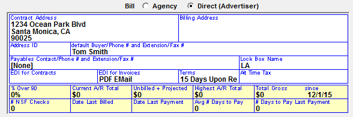

Invoice Setup
There are several options that must be set prior to invoicing. These settings will affect the way in which you bill and report your revenue.
Site Options
Invoice Tab
Payment Name and Address: This is the Remit To address that appears on the invoice.
Default Billing Cycle Local, Regional and National: You can define a sales source as being Local, Regional, or National in the Sales Origin Field. This option will default the Billing Cycle that will appear in the Proposal and Orders Screens based on the salesperson’s setting. You can override the default on an order by order basis. You must have the Weekly and Calendar billing options checked to use this feature.
Lowest Invoice Number to Assign, Highest Number to Assign, Next Number to Assign: Determines the invoice number range. The Next # to Assign needs to be defined during the initial setup, and will then update automatically during invoicing.
Last Billed Date: Broadcast, Calendar, Weekly, Last Rep Print Date: These invoice dates need to be defined during the initial setup, and will then update automatically as needed during invoicing.
Invoice All Contracts: There are three methods of billing. Each method affects the invoices as well as the way in which receivables are updated. Once a method is selected, it cannot be changed. See Appendix A for complete descriptions of each method.
- (A) “As Ordered, Update Ordered Vehicle”: All dollars ordered will be billed as ordered including missed and moved spots, with revenue going to the ordered vehicle.
- (B) “As Ordered, Update Aired Vehicle”: All dollars ordered will be billed including missed and moved spots with revenue going to the aired vehicle.
- (C) “As Aired”: Spots will be billed based on where they aired, and all revenue moves with the spots.
As Ordered Missed Show Avail Times or Random: When billing as ordered, conventional line spots that were missed can either show the outside date/time or a random time using the ordered criteria on the invoice.
Ordered Daypart Show Name, Time or None: This question allows you to define how you want to see the package spots in the Ordered area on Invoice Form #1. Package spots are created at the time the preliminary or final invoice is generated. The options are:
- Name: Prints the daypart name.
- Time: Prints the ordered daypart times or override times.
- None: Prints the package vehicle name.
BBs on Same Line: If checked on, a separate invoice line will be created for Open Billboards, the ordered spot, and Closing Billboards. This may create lengthy invoice runs.
For ISCI Truncate Right, Truncate Left, Wrap Around: These settings determine how lengthy ISCI codes are handled on the invoice. “Truncate right” will remove the last characters of the ISCI if it exceeds the column space. “Truncate left” will remove the first few characters of the ISCI if it exceeds the column space. “Wrap Around” will show the entire text across more than one line.
All Vehicles on Same Invoice: If set to Yes, this will print all vehicles on one invoice; if No, a separate invoice will print for every vehicle on a contract.
Combine Air and NTR: This will combine Air Time and NTR on one invoice. If using Installment Billing, this option is automatically activated.
Invoice Selective Vehicles: When checked, each vehicle is listed in the Invoice Screen and can be selected and invoiced individually. This option can only be used if “All Vehicles on Same Invoice” is selected.
Laser Print Form (1) Ordered/Aired/Reconc Columns: Typically Invoice form 1 is used with “Sort by Sales Source” selected. This is the default and most commonly used form. It shows ordered information from the contract, reconciled aired information, and calculates the difference.
If Suppress Air Time is selected, no spot air times will print.
Sort by Sales Source: This applies to Form #1 only. If checked, the major invoice sort will be by Sales Source, with the invoice payee as a minor sort.
Laser Print Form (2) Separate Invoice/Affidavit: This form shows Totals for each Market. A separate Affidavit of Performance Report will show the detail spot information that can be provided to your client with the invoice. To enable this format, “Market Based” must be activated in Site Options->Sales.
Laser Print Form (3) Aired Column: This form only shows the aired spots and does not have an Ordered or Reconciled column on the invoice format.
Laser Print Form (4) 3-Col Aired: This format shows aired spots only and does not have an Ordered or Reconciled column. The aired spots show in three columns that will fit more airing spots per invoice than the other invoice formats. No Makegood or Outside spots, missed spots or line comments are shown. This form cannot combine NTR.
Tax Region None, USA, Canadian, Air Time Tax, NTR Tax: If applicable, select what country tax is used, whether the tax is for Air Time spots, NTR, or both, and define name for Tax 1 and Tax 2 (if used) for example: AZ, NM, HI.
Print Rep Invoices by Market or Vehicle: If using Rep vehicles, determine whether you wish to print Rep Invoices by Market (vehicle group) or by individual vehicles.
Post Rep by Date/Time, and/or Counts by Std, Cal, Wkly, or None: This determines how rep spots are posted.
- Post Rep by Date/Time and/or Counts: Allows you to post the exact dates and times each rep spot aired.
- Std: Standard broadcast calendar.
- Cal: Calendar month.
- Wkly: Weekly.
- None.
Sort by Payee or Vehicle: Typically, invoices are sorted alphabetically by payee. If the Invoice Selective Vehicles option is activated, this question gives you the choice of sorting by vehicle instead of agency.
Lock Box by Vehicle Instead of Payee: This is used if your vehicles are stations and invoices are remitted to the stations, not corporate headquarters. When selected, each vehicle must have an address defined in Lists->Vehicles.
Day is Complete Testing: If checked, Monday through Sunday check boxes appear in Post Log. Each day must be checked as Complete for each vehicle prior to running invoices.
# Lines to Skip: Above Log and Between Logo and Address: A standard #10 window envelope can be used to mail out the invoices. These questions are used to adjust the number of spaces on the invoice form to fit into the window. The allowable numbers are between 0 and 5. Start with 0 before and 3 between logo and address, then adjust from there after testing a preliminary invoice to determine the correct values for your printer.
Change Invoice Spot Times to ET, CT, MT, PT or N/A: Typically N/A is selected. This is used if your programming is defined in a time zone different from what needs to appear on the invoices.
Print Final EDI Invoices: When checked, by default, the “Include EDI” checkbox on the invoice screen will be checked on so that invoices for agencies that are set to use the EDI system will also get regular invoices created for them.
Bill Spots X-Mid in Aired Month: If checked and using EDI, then spots that cross midnight on the last day of the standard billing month will print on the invoice in the order month with a notation that they aired after midnight, but will actually bill in the next month where they truly aired. If unchecked then the spots will be shown and billed in the ordered month.
Require Complete Station Posting Prior to Agency Invoices: This setting is only for systems that have vehicles set to the "Post Log Import Source" of "Radio Station Invoice" on the Vehicle Options->Barter tab. If the "Require Complete Station Posting Prior to Agency Invoices" setting is checked on, then all radio station invoices must be posted (either by importing the PDF invoices or by manually posting them on the Post Log screen) before final invoices can be run from the Traffic system. If the "Require Complete Station Posting Prior to Agency Invoices" is not checked on, then final invoices can be generated before all the radio station invoices have been imported for the month. The default setting for this option is for it be unchecked. It should be left unchecked for all systems except in the case of systems that use the radio station invoice import feature and that do not wish to allow final invoices to be generated before all radio station invoices have been imported into the Traffic system.
Accounting Tab
Installment Method as Invoiced (Inv is Rev) or Aired (Separate Inv from Rev): If Installment Billing is activated in Site Options->Options, you must choose the method of reporting revenue. Once chosen, this method cannot be changed.
- Invoiced (Inv is Rev): This will report your revenue as it billed. For example, if the flight goes for 12 months, but they are billed upfront in January, all of the revenue will report in January.
- Aired (Separate Inv from Rev): This will report your revenue as aired. For example, if the flight goes for 12 months, but they are billed upfront in January, the revenue will report across the 12 months.
Collection Contact and Phone Number: This contact information will print on the Statement of Account report.
Comment Tab
Invoice Disclaimer: Text defined here will appear on all Invoices.
Sales Tab
Wordwrap Vehicle Name on Form Reports: Vehicles with a name greater than 20 characters to wrap around to the next line, rather than being cut off after 20 characters
Copy Tab
Using ISCI Codes on Invoices: This question determines whether ISCI codes will appear on the invoice. They can be set to always or never appear, or a default answer can be set in the Advertiser and Agency screens that you can override. If an ISCI begins with “WW_”, and an agency advertiser requires those letters to be excluded from their invoice, this setting must be set to either “Ask - Default Yes” or “Ask – Default No”, and the Agency or Direct Advertiser must have the “ISCI on Invoice” field set to “W/O Leader”.
Podcast Invoices
If a vehicle’s medium type is set to be Podcast in the Vehicles -> Options -> General Tab, and the “Show Audio Type on Proposal/Order” checkbox is checked on in the Site Options -> Contract tab, the audio type will print on Invoice Form 1.
Audio Types are defined in the Proposal/Order screen Override Audio box.
Options Tab
A special, custom air time and NTR invoice export is created during the final and reprint invoice process when the “Invoice Export” option on the Options tab, in the System Options section, is checked on. For more information on this special export, see the Invoice Export help document on the Counterpoint website.
Advertiser Screen
There are several billing options to define per Advertiser.
- Invoice Sort: You can define a category that groups invoices with the same requirements together during the invoice run, such as Notarized Scripts Required
- Allow on Invoices: Each of these fields are toggles that can be changed for each Advertiser
- Rates: If set to Yes, spot rates and subtotals by vehicle are shown on the invoice. If set to No, spot rates and subtotals by vehicle are suppressed.
- ISCI: Yes means the client requires their copy information on the spots on the invoice/affidavit and the spots that are missing copy will show on the Missing ISCI Report. No means ISCI is not required for the client.
- Package As: You can see either airing times or daypart ordered times in the airing column.
Direct advertisers can be configured to use EDI Invoices or the PDF Email system.

To configure a direct advertiser to use EDI for Invoices, select the appropriate EDI service from the “EDI for Invoices” field.
To configure a direct advertiser to use the PDF Email feature, select “PDF Email” from the “EDI for Invoices” dropdown, double click, then enter the names and email addresses of the email recipients. Up to four personnel records can be entered. If you want one of your personnel to receive a copy of the emailed invoices, include their name and email address on this screen. After entering the email recipients, press Done on the PDF Email Invoice Personnel screen, then save the direct advertiser.
Agency Screen
There are several billing options to define per Agency.
- ISCI on Invoice: Yes means the client requires their copy information on the spots on the invoice/affidavit and the spots that are missing copy will show on the Missing ISCI Report. No means ISCI is not required for the client
- Invoice Sort: You can define a category that groups invoices with the same requirements together during the invoice run, such as Notarized Scripts Required
- Package Invoice Show: You can see either airing times or daypart ordered times in the airing column
- Lock Box Name: The Lock Box addresses are defined in Lists -> Lock Box and then associated with an agency/advertiser. Lock Box is used if the payment from specific agencies/advertisers is to be sent to a different location.
- There is also a Site Options -> Invoice setting “Lock box by vehicle instead of payee”, which may be needed if your vehicles are stations where the payment will be sent.
- EDI for invoices: If using electronic invoices, select the EDI service being used from this dropdown. You can also select “PDF Email” from this dropdown to enable this agency to use the PDF email feature, which automatically emails final and reprint invoices to the recipients defined for the agency. To configure an agency to use the PDF Email feature, select “PDF Email” from the “EDI for Invoices” dropdown, double click, then enter the names and email addresses of the email recipients. Up to four personnel records can be entered. If you want one of your personnel to receive a copy of the emailed invoices, include their name and email address on this screen. After entering the email recipients, press Done on the PDF Email Invoice Personnel screen, then save the agency.
- Terms: The default Remit terms are defined in Site Options -> Export.
- Air Time Tax: If applicable set up the tax terms in Site Options -> Invoice.
Sales Source
The Sales Sources determine how the revenue for a vehicle is updated. The Sales Source is assigned to a Salesperson. All management reports will break out the revenue by sales source.
- Enter the Name of the Sales Source
- Enter the Commission percentage that Sales Source receives (if applicable)
- Enter the Sales Origin for the Sales Source, for example, is this National or Local business, Direct or Agency?
- Determine how Receivables should be updated after invoicing
- Receivables- Will update the amount to A/R
- History- Will invoice the amount and update it into the history receivables
- Export + History- Will invoice the amount, automatically create an export and update it into the history receivables
- Export + A/R- Will invoice the amount, automatically create an export and update it into the current A/R
- Ask by Vehicle - You define on the vehicle participant screen how and where revenue is updated
- Enter the Logo that will print on invoices and reports for this Sales Source
- Each logo name must be no more than 15 characters (excluding the extension)
- Each logo must reside in the Logo folder defined in Traffic.INI (see IT Utilities for more information)
- The logo entered in this field will display on all invoices for this Sales Source
- If your network does not need multiple logos, and your RptLogo is a JPG, you may leave this filed blank
- If your network does not need multiple logos, and your RptLogo is a BMP, the system will not find the logo, and will default to the hardcoded star logo
- To resolve, change your logo from a BMP to a JPG file in any art program
Accounting
There are several screens on the Lists screen that affect invoicing: EDI, Invoice Sorts and Lock Boxes.
EDI
This section provides a brief overview of the Electronic Invoice feature (EDI).
The Counterpoint Traffic system has the ability to produce an electronic data file for final and reprint invoices. An invoice file is automatically created in the X:\CSI\PROD\EXPORT subfolder for the agencies and direct advertisers that are defined to receive EDI files.
The EDI Screen is where you define the companies that will be delivering the Electronic Invoices.
- In the Site Options -> Export tab
- “Using EDI Service for Invoices” Select this option if using a service to generate and send electronic invoices. You will need to indicate the EDI service in the agency screen in the “EDI: call letters” field.
- In the Site Options -> Invoices tab
- Set “All vehicles on same invoice” to Yes.
- Set “Print Final EDI Invoices” as needed:
- If left unchecked (default) the “Include EDI” checkbox on the invoice screen will be unchecked by default and hard copies of EDI invoices will not be printed out with the invoice run. (Simply check the option on the invoice screen to override the default and include printed copies of the EDI invoices).
- If checked, the “Include EDI” option on the Invoice screen will be checked by default.
- In Site Options -> Invoice tab: Spots Crossing Midnight
- Bill Spots X-Mid in Aired Month: If checked, and using EDI, then spots that cross midnight on the last day of the standard billing month will print on the invoice in the order month with a notation that they aired after midnight, but will actually bill in the next month where they truly aired.
Ordered Month’s invoice:

Aired month’s invoice:
If unchecked then the spots will be shown and billed in the ordered month:
Invoice Sorts
You can define a category that groups invoices with the same requirements together during the invoice run, such as Notarized Scripts Required.
Lock Boxes
The Lock Box addresses are associated with an agency/advertiser, and are used if the payment from specific agencies/advertisers is to be sent to a different location.
There is a checkbox in the Site Options -> Invoices tab “Lock box by vehicle instead of payee” that is used if vehicles are stations and invoices are remitted to the stations, not corporate headquarters. When selected, each vehicle must have an address defined in Lists -> Vehicles.